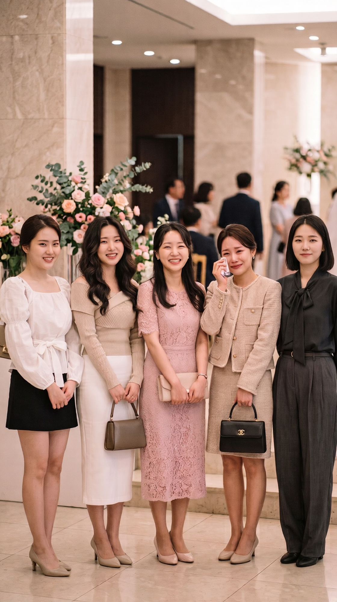

당신의 마음 가장 깊은 곳, 지하 37층
결혼 전, 쎄한 기분을 지울 수 없어 탐정에게 예비신랑의 뒤를 캐본 나.
의뢰 결과, 오늘 결혼식장에 찾아온 5명의 여사친 중 한 명과 아주 깊은 내연 관계라고 한다.
이들 중 내 남편을 빼앗을 단 한 명의 진짜 불륜녀는 누구일까?

1번 검은 미니스커트 여사친
진짜 불륜녀가 아닙니다. 1번은 그저 오지랖이 넓고, 오랫동안 알고 지낸 편한 남사친을 다른 여자에게 뺏긴 것 같아 은근한 서운함을 느끼는 전형적인 '여사친' 유형입니다.
신부 앞에서 자신이 신랑의 사소한 습관까지 다 알고 있다는 듯이 말해 영역 표시를 하고 기선을 제압하려 했지만, 이는 얄미운 질투심과 과시욕에서 비롯된 행동일 뿐입니다. 정말 치명적이고 은밀한 내연 관계를 이어가는 사람은 결혼식이라는 결정적인 장소에서 신부의 경계심을 직접적으로 자극하는 어리석은 행동을 하지 않습니다.
당신은 타인의 선 넘는 무례함이나 미묘한 기싸움은 잘 캐치하는 편이지만, 정작 어둠 속에 숨어있는 진짜 치밀한 적은 놓치기 쉽습니다.
인간관계에서 대놓고 얄미운 행동을 하는 사람에게 에너지를 쏟기보다, 겉으로는 아무렇지 않은 척하며 뒤에서 조용히 실속을 챙기거나 딴마음을 품는 사람들을 더 경계할 필요가 있습니다.
2번 오프숄더 여사친
겉으로 드러난 함정에 시선이 묶였습니다. 2번은 불륜녀가 아니라, 남의 결혼식에서도 자신이 가장 돋보이고 싶어 하는 과시형 민폐 하객입니다.
신부 대기실에 어울리지 않는 노출 있는 의상을 입고 온 것이나, 어제 늦게까지 야근을 같이 했다며 굳이 신부 앞에서 친분을 과시하는 행동 모두 '나 이 남자에게 꽤 특별한 동료야'라는 우월감을 느끼고 싶어서 하는 얕은 수작에 불과합니다. 실제로 어제 야근을 함께한 것은 단순한 업무 때문이었으며, 신랑 입장에서도 그저 피곤하고 부담스러운 직장 동료일 가능성이 큽니다.
겉으로 화려하게 드러나는 도발에 시선을 빼앗겨 정작 가장 위험한 본질을 보지 못했습니다. 평소에도 목소리가 크거나 화려한 언변으로 자신을 포장하는 사람에게 쉽게 신경을 뺏기는 경향이 있을 수 있습니다.
눈앞에 보이는 자극적인 말이나 행동 너머에 있는 상대방의 진짜 의도를 한 번 더 차분하게 의심해 보는 연습이 필요합니다.
3번 분홍 원피스 여사친
꽤 예리한 눈썰미를 가졌지만, 정답 문턱에서 비껴갔습니다. 3번은 현재 진행형인 내연녀가 아니라, 과거에 신랑을 깊게 짝사랑했거나 짧게 썸을 탔다가 정리된 인물입니다.
남자의 체질이나 은밀한 취향인 향수까지 정확히 알고 선물하며 묘한 여운을 남긴 것은, 결혼식 날 신부의 기분을 미묘하게 망쳐놓고 신랑의 머릿속에 자신의 존재감을 마지막으로 각인시키려는 미련의 발로입니다. 가장 환하게 웃고 있는 얼굴 뒤에는 '그 자리에 내가 있었어야 했는데'라는 씁쓸한 패배감이 숨겨져 있습니다.
과거의 인연이나 숨겨진 미묘한 감정선을 읽는 감각은 상당히 뛰어납니다. 하지만 이미 끝난 과거의 흔적에 집중하느라, 현재 진행형으로 벌어지고 있는 더 큰 위험을 놓칠 수 있습니다.
때로는 상대방이 던지는 의미심장한 미끼에 반응하기보다, 아예 아무런 단서도 남기지 않으려 애쓰는 부자연스러운 침묵에 주목해야 합니다.
4번 눈물 흘리는 여사친
눈앞의 극적인 연출에 판단력이 흐려졌습니다. 결혼식장에서 신부보다 더 서럽게 우는 여사친은 드라마나 클리셰에서는 단골 불륜녀로 등장하지만, 현실에서는 그저 감수성이 지나치게 과잉된 하객일 뿐입니다.
오랜 친구가 결혼한다는 사실에 혼자 감동하고 분위기에 취해 눈물을 흘리는, 이른바 '주인공 병'에 걸린 상태라고 볼 수 있습니다. 만약 정말로 신랑과 깊은 내연 관계였다면, 주변 하객들과 신부의 시선이 일제히 쏠리는 이런 돌발 행동은 절대 하지 못합니다. 죄책감과 들통날지 모른다는 극도의 긴장감 때문에 오히려 감정을 철저히 죽이는 것이 진짜 범인의 심리입니다.
당신은 타인의 극적인 감정 표현이나 눈물에 마음이 쉽게 흔들리고 공감하는 성향을 가지고 있습니다. 다정하고 직관적인 성격이지만, 반대로 말하면 작정하고 불쌍한 척하거나 감정적으로 호소하는 사람에게 속아 넘어가기 쉽습니다.
중요한 판단을 내려야 할 때는 상대방의 감정선이 아닌, 객관적인 사실과 정황을 먼저 따져보는 냉철함을 길러야 합니다.
5번 검은 셔츠 여사친
서늘할 정도로 정확한 직감입니다. 내 남편을 빼앗을 단 한 명의 진짜 불륜녀는 바로 5번입니다. 정말 깊고 은밀한 관계일수록 결혼식 당일에는 신부의 의심 레이더망을 피하기 위해 본능적으로 존재감을 지웁니다. 다른 여사친들이 웃으며 말을 걸고 감정을 드러낼 때, 혼자만 어두운 옷을 입고 굳은 표정으로 거리를 둔 것은 자신의 복잡한 감정(질투, 죄책감, 분노)이 새어 나갈까 봐 철저히 방어기제를 작동시킨 것입니다.
결정적인 증거는 바로 '나와 똑같은 한정판 핸드크림'입니다. 예비신랑이 밀회를 즐기면서, 집에 돌아왔을 때 몸에 밴 다른 여자의 살냄새를 들키지 않기 위해 예비신부와 내연녀 두 사람에게 똑같은 향의 핸드크림을 사주어 완벽한 알리바이를 만든 것입니다.
가장 조용한 그림자 속에 숨어있던 치명적인 단서를 단번에 꿰뚫어 본 당신의 감각은 매우 예리합니다. 겉으로 드러나는 화려한 말이나 행동에 현혹되지 않고, 상황의 이면과 미세한 위화감을 읽어내는 통찰력이 상당히 뛰어납니다.
평소에도 누군가 당신을 속이려 해도 금방 눈치채는 편일 것입니다. 지금처럼 당신의 그 차분하고 날카로운 육감과 판단력을 믿고 나아가도 좋습니다.